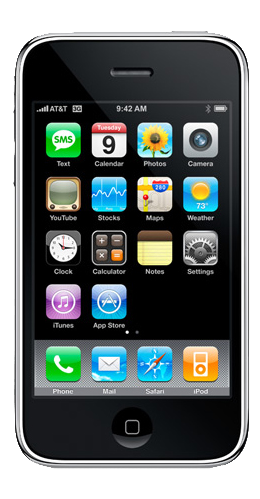

The release of the iPhone is one of the most influential
innovations in the 21st century, and today we're going to
run through the ins and outs of every edition.
BEHOLD: THE ORIGINAL
Released: June 2007
Price: $599 USD
The first iPhone ever, it had 16GB storage (which was HUGE).
The release of this device was the beginning of the smartphone era,
which is why the video above is such a big moment in history.
If you had one of these back in the day, you were instantly the
coolest person in the office.
iPhone 3G

Released: July 2008
Price: $699 USD
Exterior design mostly stayed the same, however the biggest improvement
was the ability to work on the 3G network which made internet access much faster.
A 3GS model also came out soon after, which was the first inclusion
of voice control in an iPhone. Although it was very janky and terrible to use,
it paved the way for what we now know today as Siri.
iPhone 4
Released: June 2010
Price: $699 USD
The first ever iPhone to use an apple made processor (Apple A4)
This iPhone was much faster than its previous generations, which made
people go crazy for it, especially since it was the same price as the 3G
Other than the better processor, the only differences were that it
looks much nicer (one of my favourite iPhone looks) and a better camera
that was capable of shooting 480P video.
iPhone 5
Released: September 2012
Price: $849 USD
First iPhone to support 4G LTE, also the first use of the lightning port
that is now being removed for USB-C port in modern iPhones.
It featured a thinner and lighter body, with a new A6 processing chip
It had two variations, that were released a year later.
These were the 5s, which was the first instance of touch ID on an iPhone,
and the 5c, which came in white, blue, green, red, or yellow.
iPhone 6
Released: September 2014
$849 USD, $949USD (plus)
The 6 was the biggest physical change in the iPhone development ever.
Instead of jagged edges, they were now round, just like the corners as well.
I definitely remember the shock when this phone came out and thought it was way too big.
Nowadays, the iPhone 6 is considered a regularly sized mobile device. The release of this
device started a new norm for larger pockets.
iPhone SE
Released: March 2016
Price: 1st Gen $299 USD, 3rd Gen $719 USD
A much desired release from many customers that were unhappy with
the physical update with the iPhone 6.
The SE was released to bring back the more iPhone 5 like design but
still keeping the faster processors and better features that were in
the 6 and 6 plus.
It also provided a more affordable phone option since the prices of phones
were only going up.
iPhone 7
Released: September 2016
Price: $849 USD, $969 USD (plus)
The 7th generation iPhones were the first to include dual lens cameras
with a 2X optical zoom.
Perhaps the biggest change, they removed the headphone jack,
which at the time rather confusing, however once again
apple have predicted what the norm will be in the future and now almost
every phone doesn't have a headphone jack anymore.
iPhone 8
Released: September 2017
Price: $849 USD, $949 USD (plus)
Not much changed with this upgrade,
however there were a few extra features.
The iPhone 8 included a glass back, a slightly
more powerful CPU and an improved true tone display.
Perhaps the biggest change was the ability to wirelessly charge,
which 14 year old me thought was the coolest thing in the world.
iPhone X
Released: November 2018
Price: $1149 USD
The iPhone X was a significant redesign with an edge-to-edge OLED
display and Face ID.
It marked the removal of the home button and introduced
gesture-based navigation.
The dual lens looked different to previous dual lenses,
being sorted veritcally instead of the original horizontal.
iPhone 11
Released: September 2019
Price: $699 USD
The iPhone 11 featured a dual-camera system (we're getting closer to 3 cameras)
It was available in a variety of vibrant colours including
black, green, yellow, purple and white. Also a RED colour that
when purchased, a percentage of the profits would go to 'Global Funds',
which fights against AIDS and COVID-19.
A more affordable option compared to the Pro models with similar performance.
iPhone 12
Released: October 2020
Price: $799 USD
The iPhone 12 featured a new flat-edge design and was the first
iPhone that supported 5G capability.
It was available in standard and mini sizes, since many people
were getting upset with how big phones were getting in modern times.
iPhone 13
Released: September 2021
Price: $799 USD, $999 USD (Pro)
The iPhone 13 introduced improved camera systems and a significantly better battery life
It retained the flat-edge design from the previous generation.
Available in standard, mini, Pro, and Pro Max models.
Perhaps the best iPhone ever is the 13 pro since it's the one I own,
and it's never failed me.
iPhone 14
Released: September 2022
Price: $849 USD, $1199 USD (Pro Max)
The 14 introduced the idea of the 'dynamic island' which is
a little black pill shaped icon at the top of the screen which
changes size and shape depending on what needs to be displayed there,
such as notifications.
Dynamic Island removed the notch at the top of the iPhone altogether.
iPhone 15
Released: September 2023
Price: $949 USD, $1399 USD (Pro Max)
And here we have it, the most recent iPhone release.
For years, people had been praying for USB-C charging, and finally,
due to UK laws about USC-C ports, they got rid of the lighting port
for the iPhone 15. God bless the UK.
Outdoor phone screen brigthness was increased by 2000 nits (double of the iPhone 14)
This is surprising to me since my 13 disintegrates my retinas when I use front facing flash
in the dark.
.png)